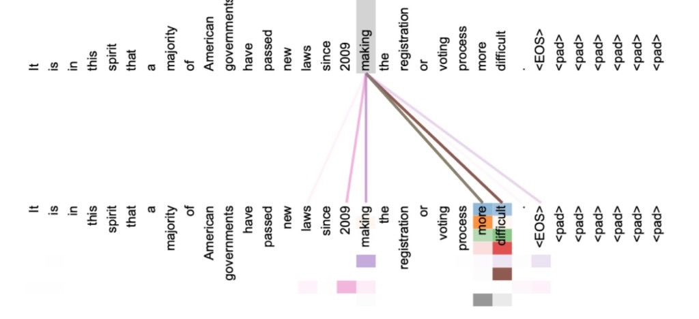

Лекция 2. Эволюция трансформеров к современным LLM-архитектурам08
Восьмиголовое внимание
Оригинал статьи. Энкодер, слой 5 из 6. Показано внимание только слова making. Разные цвета — разные головы.

Многие головы держат дальнюю связь: making … more difficult. arxiv.org/abs/1706.03762, рисунок 3.